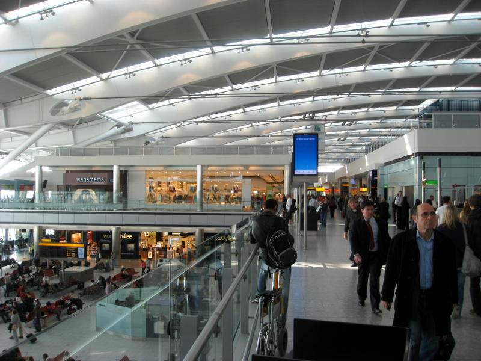
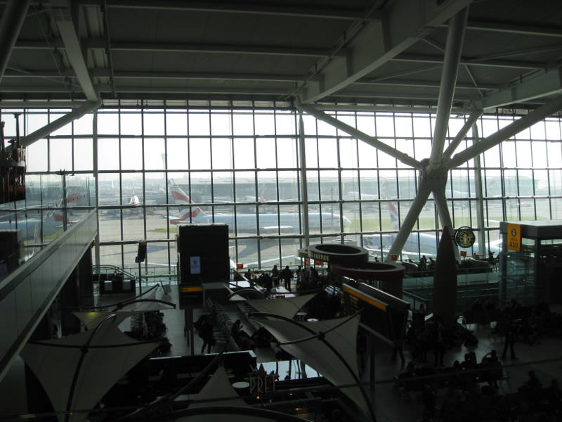
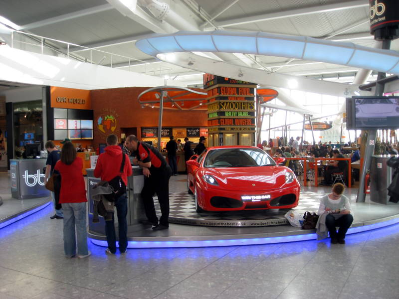

Heathrow Airport

The
way the trip was planned, I was to fly from Boston to London to Berlin
to London to Reykjavík to London and back to Boston. So, you can
imagine I became well acquainted with Terminal 5 of Heathrow airport.
Heathrow
airport takes a lot of flak, but it has a very spacious feel to it, and
it's not unpleasant to look at. It's a little crowded though.
Next time I go there, I'm going to try out the Gordon Ramsay
restaurant "Plane Food".

Here's
where people get to wait for their flights. It's nice to be able
to stare at the big planes rolling by. Those planes you see here
are marked with the British Airways logo.

This
Ferrari was up for grabs, as long as you pony up a winning raffle
ticket. Right. So behind it is a "Giraffe" restaurant.
The food was good and affordable. Because British Airways
got the timing wrong on a connecting flight, they gave me a gift
certificate to spend on food and drinks in Heathrow. I spent it
here.
Back